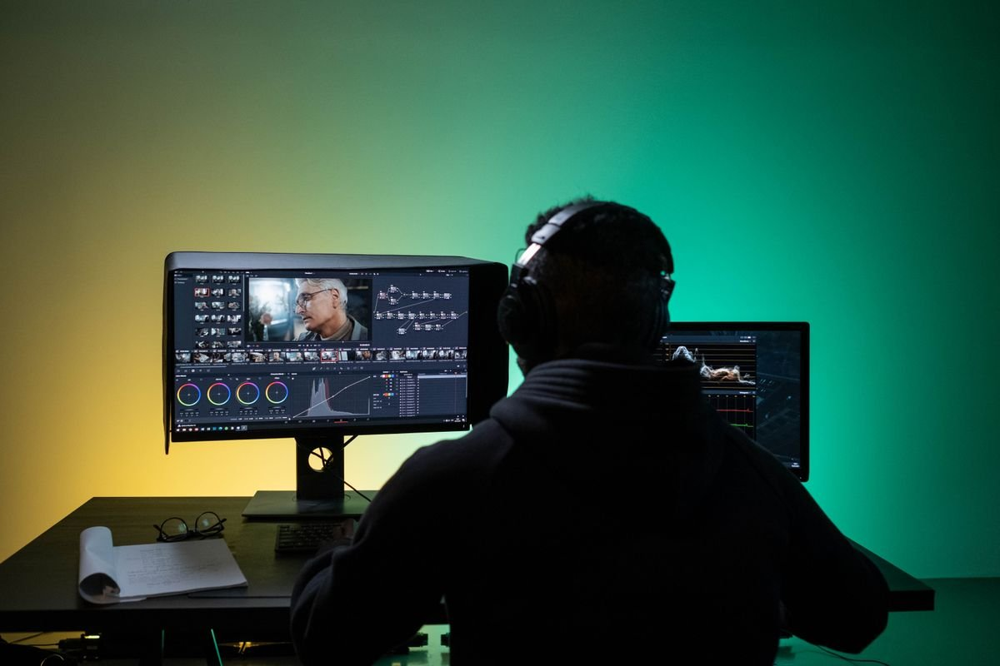
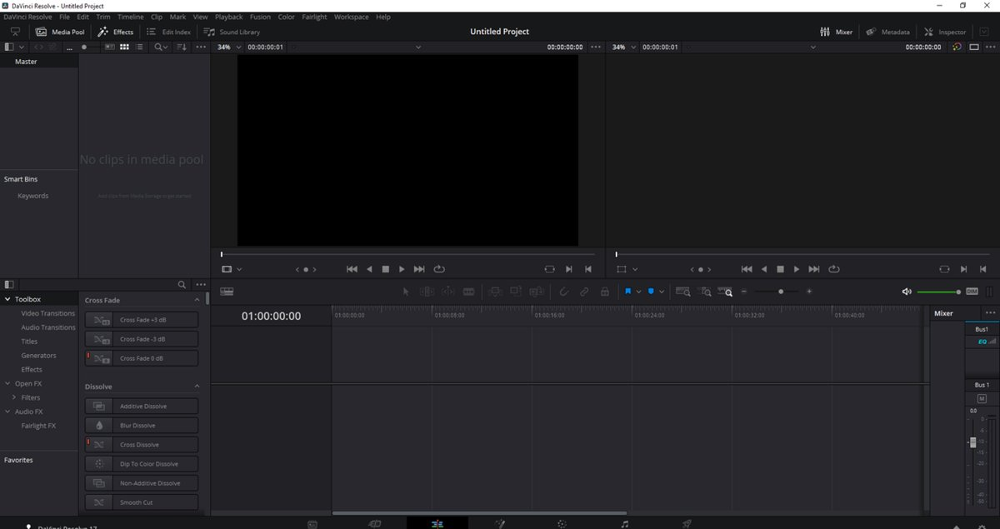
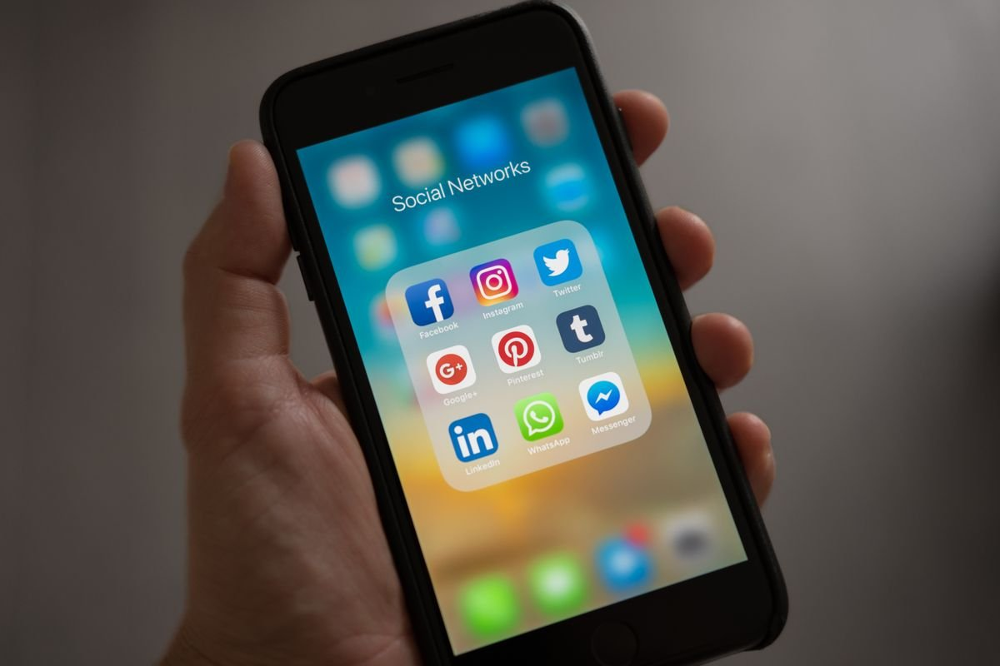

Banyak orang mengira kalau mau edit video yang hasilnya rapi harus langganan aplikasi mahal tiap bulan. Padahal ada satu aplikasi edit video kelas profesional yang versi dasarnya gratis penuh, bukan trial, bukan demo ber-watermark: DaVinci Resolve buatan Blackmagic Design. Versi gratisnya bisa kamu pakai tanpa batas waktu, dan hasilnya bisa diekspor sampai kualitas UHD 4K 60 fps tanpa watermark, per Oktober 2026.
Nama DaVinci Resolve memang terdengar seperti barang mahal. Wajar, karena aplikasi ini dipakai studio film untuk proses color grading. Tapi Blackmagic Design memberi jalur gratis resmi yang benar-benar bisa dipakai buat kerja sehari-hari, dari memotong video sampai mengolah suara.
Yang Kamu Dapat di Versi Gratisnya
Versi gratis DaVinci Resolve bukan sekadar pemotong video. Di dalamnya ada empat halaman kerja utama: Edit untuk memotong dan menyusun klip, Color untuk mengatur warna seperti editor film, Fusion untuk efek visual dan motion graphics, serta Fairlight untuk mengolah audio. Semuanya termasuk di versi gratis, tanpa langganan, tanpa kedaluwarsa.
Batasan utamanya ada di ekspor: maksimal UHD 3840x2160 pada 60 frame per detik. Buat konten YouTube, TikTok, atau tugas kantor, batas ini masih lega. Fitur AI tertentu seperti Magic Mask dan noise reduction canggih memang hanya ada di versi berbayar, tapi inti pekerjaan editnya sudah lengkap di versi gratis.

Lalu yang Berbayarnya Itu Apa? Studio Cuma 295 Dolar, Sekali Bayar
Yang berbayar adalah DaVinci Resolve Studio, harganya 295 dolar AS sekali bayar, bukan langganan. Sekali beli, lisensinya milikmu selamanya dengan update gratis. Pembuatnya sendiri memastikan tidak ada skema sewa bulanan.
Studio membuka kunci fitur lanjutan: ekspor sampai resolusi 32K, frame rate sampai 120 fps, alat AI Neural Engine yang lebih lengkap, grading HDR, dan pemrosesan multi GPU. Buat pemula atau konten kreator harian, hampir semua ini belum terasa perlu. Versi gratisnya saja sudah lebih dari cukup.

Tangkapan layar antarmuka DaVinci Resolve oleh FedericoFB, lisensi CC BY-SA 4.0, via Wikimedia Commons.
Sebagai pembanding, Adobe Premiere versi aplikasi tunggal harganya 22,99 dolar AS per bulan per Oktober 2026, yang dalam tiga tahun menghabiskan sekitar 827 dolar. Studio sekali bayar 295 dolar sudah terasa hemat, apalagi versi gratis yang nol rupiah.
Cocok Buat Konten Kreator: Edit Vertikal sampai Upload Langsung
Sejak DaVinci Resolve 20, aplikasinya makin ramah buat konten kreator. Ada mode edit video vertikal (portrait) yang memang dibuat untuk TikTok dan Reels, plus tombol upload langsung ke TikTok, YouTube, Vimeo, dan X tanpa keluar aplikasi. Ada juga smart reframing yang membantu memotong video horizontal jadi vertikal otomatis.
Fitur bantuan AI di versi 20 tidak semuanya dikunci di Studio. Versi gratisnya tetap dapat IntelliScript, Audio Assistant, SmartSwitch, dan subtitle animasi otomatis. Jadi kamu tetap merasakan bantuan AI tanpa keluar uang.

Mulai dalam Satu Sore
Kamu tidak butuh kursus untuk mulai. Unduh installernya langsung dari situs resmi blackmagicdesign.com, lalu pilih versi DaVinci Resolve (bukan Studio) saat mengunduh. Instal seperti aplikasi biasa di Windows, Mac, atau Linux.
- Buka aplikasi, masuk ke halaman Cut, lalu seret video kamu ke timeline.
- Potong bagian yang tidak perlu pakai blade tool, susun urutannya.
- Buka halaman Color kalau mau mempercantik warna, atau lewati kalau videonya sudah bagus.
- Buka halaman Deliver, pilih format MP4 dengan resolusi yang kamu mau, lalu klik render.
File hasilnya langsung tersimpan di laptop kamu, tanpa watermark, tanpa iklan, tanpa ajakan langganan. Kalau suatu saat pekerjaanmu butuh resolusi di atas UHD atau alat AI lanjutan, barulah versi Studio 295 dolar jadi pilihan, bukan keharusan.
Versi gratisnya ini resmi dari pembuatnya, jadi aman dan legal. Tidak perlu cari-cari crack atau akun bajakan yang justru berisiko membawa virus ke laptop kamu.
Sumber dan Info Resmi
Angka, harga, dan fitur di artikel ini merujuk ke sumber berikut, yang sudah diverifikasi isinya per Oktober 2026:
- The Post Flow: Resolve Studio vs Free: versi gratis bukan trial, editor NLE penuh tanpa batas waktu dan tanpa watermark, ekspor sampai UHD 3840x2160 60fps; Studio 295 dolar AS sekali bayar tanpa langganan; versi gratis tidak punya noise reduction.
- Miracamp: harga DaVinci Resolve: Studio 295 dolar AS sekali bayar dengan lisensi perpetual; versi gratis tanpa watermark dan tanpa kedaluwarsa; Studio membuka ekspor sampai 32K.
- Metavert: Premiere Pro vs DaVinci Resolve: Adobe Premiere single-app 22,99 dolar AS per bulan per Oktober 2026 (sekitar 827 dolar dalam 3 tahun); Studio 295 dolar sekali bayar dengan update gratis; versi gratis ekspor UHD 60fps.
- OpenYourAIs: fitur AI DaVinci Resolve 20: versi gratis dapat IntelliScript, Audio Assistant, SmartSwitch, dan Animated Subtitles; Studio tetap 295 dolar.
- Notebookcheck: peluncuran DaVinci Resolve 20: mendukung edit video vertikal, upload langsung ke TikTok, Vimeo, X, dan YouTube, serta smart reframing.
- Blackmagic Design: halaman update resmi: unduh dan pembaruan DaVinci Resolve dari situs resmi pembuatnya.